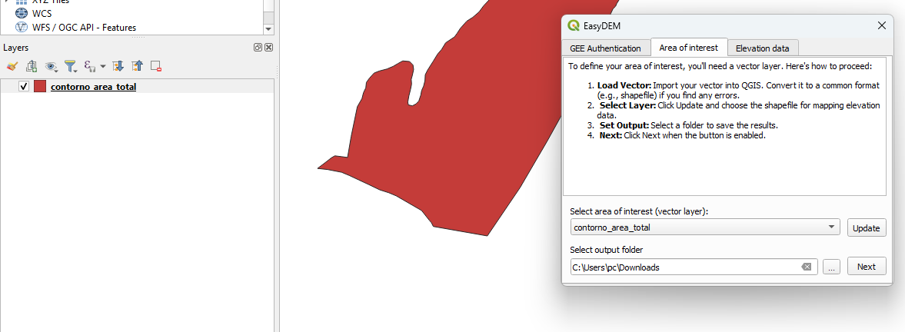
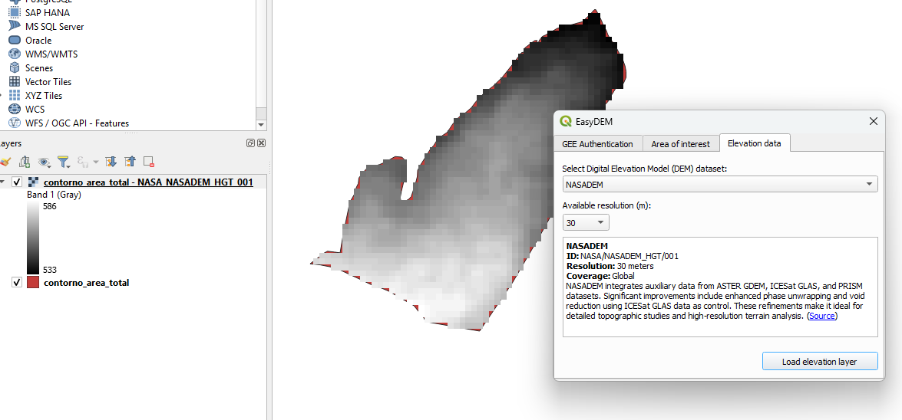

EasyDEM
EasyDEM - A QGIS Plugin for Accessing Multiple Digital Elevation Models (DEMs) through the Google Earth Engine API.
Features
- Access Multiple DEM Datasets: Easily access and visualize various DEM datasets from Google Earth Engine (GEE) catalogs, including:
- Seamless Integration: Directly access and load DEM data into QGIS for immediate use in your projects.
Installation
From QGIS Plugin Manager
- Open QGIS.
- Navigate to
Plugins>Manage and Install Plugins. - Go to the Settings tab and check the box Show also experimental plugins.
- Search for EasyDEM.
- Click Install.
- MUST DO: Restart QGIS.
From ZIP
Download EasyDEM Plugin- Download the plugin ZIP file from the link above.
- Navigate to
Plugins>Manage and Install Plugins. - Click Install from ZIP.
- Select the downloaded ZIP file.
- Click Install Plugin.
- MUST DO: Restart QGIS.
Usage
- Activate the Plugin: Go to
Plugins>EasyDEM>Activate. - Access DEM Data: Open the plugin toolbar or icon, authenticate your GEE account, choose your area of interest (vector layer), output folder, the desired DEM dataset from Google Earth Engine, and load it directly into your QGIS workspace.
- Exported Data: Downloaded DEM data will be in the selected output folder.
Step-by-Step Guide
- Initial Setup:
- Area of Interest Selection: 
- DEM Dataset Selection: 

License
The EasyDEM QGIS plugin is licensed under the MIT License.
Copyright (c) [2024] Caio Arantes
Permission is hereby granted, free of charge, to any person obtaining a copy
of this software and associated documentation files (the "Software"), to deal
in the Software without restriction, including without limitation the rights
to use, copy, modify, merge, publish, distribute, sublicense, and/or sell
copies of the Software, and to permit persons to whom the Software is
furnished to do so, subject to the following conditions:
The above copyright notice and this permission notice shall be included in all
copies or substantial portions of the Software.
THE SOFTWARE IS PROVIDED "AS IS", WITHOUT WARRANTY OF ANY KIND, EXPRESS OR
IMPLIED, INCLUDING BUT NOT LIMITED TO THE WARRANTIES OF MERCHANTABILITY,
FITNESS FOR A PARTICULAR PURPOSE AND NONINFRINGEMENT. IN NO EVENT SHALL THE
AUTHORS OR COPYRIGHT HOLDERS BE LIABLE FOR ANY CLAIM, DAMAGES OR OTHER
LIABILITY, WHETHER IN AN ACTION OF CONTRACT, TORT OR OTHERWISE, ARISING FROM,
OUT OF OR IN CONNECTION WITH THE SOFTWARE OR THE USE OR OTHER DEALINGS IN THE
SOFTWARE.
Repository
You can find the source code and contribute to the project on GitHub:
- GitHub: EasyDEM Plugin Repository
Contact
If you have any questions or need further assistance, please feel free to contact me:
- Email: c168343@dac.unicamp.br
- LinkedIn: Caio Arantes